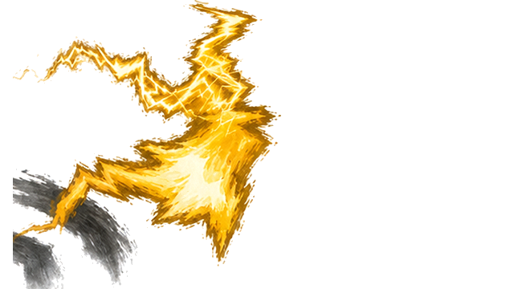
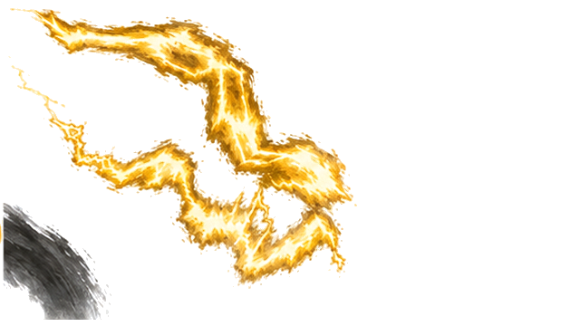
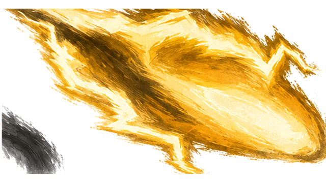

K25 · 原120 · Alpha层级 234

K25 · 原120 · Alpha层级 234
K26 · 原125 · Alpha层级 234
K27 · 原130 · Alpha层级 234
K28 · 原136 · Alpha层级 235
K29 · 原140 · Alpha层级 240

K30 · 原142 · Alpha层级 235

K31 · 原148 · Alpha层级 237

K32 · 原154 · Alpha层级 236